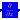
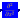

The Derivatives package contains blocks for the computation of the derivatives with respect to space.
The derivative computation is based on Newton-Gregory backward polynomials

where xn is the last grid point, s = (x-xn)/h and h = xi+1 - xi (for i = 0,..., n-1).
By using this polynomial we can compute the first and second space derivatives, that are implemented in the
respective blocks. To compute for example the first derivative we must do

where h = xi+1 - xi (for i = 0,..., n-1). We assume here that the grid points are spaced equally.
Release Notes:
| Name | Description |
|---|---|
|  u_x | |
|  u_xx |
The u_x block computes the first-order space derivative. By using the Newton-Gregory backward polynomial we
obtain
If we wish a second-order central difference approximation, we need to fit the polynomial through the three points
xi-1, xi, xi+1. This means to write the polynomial for example around the point xi+1,
drop the higher-oder terms and set s = -1 to obtain

where h = xi+1 - xi (for i = 0,..., n-1). We assume here that the grid points are spaced equally.
For the boundary point x1 we use biased formula and obtain

By using the same idea we obtain a biased formula for the boundary point xn

Release Notes:
| Type | Name | Default | Description |
|---|---|---|---|
| Integer | method | worldModel1.qss | |
| Integer | n | worldModel1.n | |
| Boundary Conditions | |||
| Integer | bcl | 0 | Type of the boundary condition at the left (-1:symmtery; 0: none) |
| Integer | bcr | 0 | Type of the boundary condition at the right (-1:symmtery; 0: none) |
| Type | Name | Description |
|---|---|---|
| input RealInput | u[worldModel1.n] | |
| output RealOutput | y[worldModel1.n] |
block u_x
extends PDE.Icons.BlockIcon2;
outer PDE.World.worldModel worldModel1;
parameter Integer method = worldModel1.qss;
inner parameter Integer n = worldModel1.n;
inner parameter Integer bcl = 0
"|Boundary Conditions| Type of the boundary condition at the left (-1:symmtery; 0: none)";
inner parameter Integer bcr = 0
"|Boundary Conditions| Type of the boundary condition at the right (-1:symmtery; 0: none)";
Modelica.Blocks.Interfaces.RealInput u[worldModel1.n];
Modelica.Blocks.Interfaces.RealOutput y[worldModel1.n];
PDE.MOL.SpaceDerivative.SDInterfaces.u_xCD4B4 der5_1 if
method == 1;
PDE.MOL.SpaceDerivative.SDInterfaces.u_xCD2B2 der1 if
method == 2;
PDE.MOL.SpaceDerivative.SDInterfaces.u_xCD6B6 cD6B6_1 if
method == 3;
equation
connect(u, der5_1.u);
connect(der5_1.y, y);
connect(u, der1.u);
connect(u, cD6B6_1.u);
connect(cD6B6_1.y, y);
connect(der1.y, y);
end u_x;
The u_xx block computes the second-order space derivative. By using the Newton-Gregory backward polynomial we
obtain

where h = xi+1 - xi (for i = 0,..., n-1). We assume here that the grid points are spaced equally.
If we wish a second-order central difference approximation, we need to fit the polynomial through the three points
xi-1, xi, xi+1. This means to write the polynomial for example around the point xi+1 and drop the higher-oder terms to obtain

and finally, to evaluate the second-order space derivative around the point xi we need to set s = -1 to get

The second-order central difference scheme is implemented in u_xxCD2B2 block.
By following the same approach we can compute the fourth-order central difference scheme. This time we need more
terms in the polynomial

and so we obtain

for the boundary points we use a biased formula and we obtain

Release Notes:
| Type | Name | Default | Description |
|---|---|---|---|
| Integer | n | worldModel1.n | |
| Integer | u_xx | worldModel1.u_xx | |
| Boundary Conditions | |||
| Integer | bcl | 0 | Type of the boundary condition at the left (-1:symmtery; 0: none) |
| Integer | bcr | 0 | Type of the boundary condition at the right (-1:symmtery; 0: none) |
| Type | Name | Description |
|---|---|---|
| input RealInput | u[worldModel1.n] | |
| output RealOutput | y[worldModel1.n] |
block u_xx
extends Icons.BlockIcon3;
outer PDE.World.worldModel worldModel1;
inner parameter Integer n = worldModel1.n;
parameter Integer u_xx = worldModel1.u_xx;
inner parameter Integer bcl = 0
"|Boundary Conditions| Type of the boundary condition at the left (-1:symmtery; 0: none)";
inner parameter Integer bcr = 0
"|Boundary Conditions| Type of the boundary condition at the right (-1:symmtery; 0: none)";
Modelica.Blocks.Interfaces.RealInput u[worldModel1.n];
Modelica.Blocks.Interfaces.RealOutput y[worldModel1.n];
PDE.MOL.SpaceDerivative.SDInterfaces.u_xxCD2B2 u_xxCD2B2_1 if
u_xx == 1;
PDE.MOL.SpaceDerivative.SDInterfaces.u_xxCD4B4 derivatorSecond if
u_xx == 2;
equation
connect(u, u_xxCD2B2_1.u);
connect(u, derivatorSecond.u);
connect(u_xxCD2B2_1.y, y);
connect(derivatorSecond.y, y);
end u_xx;